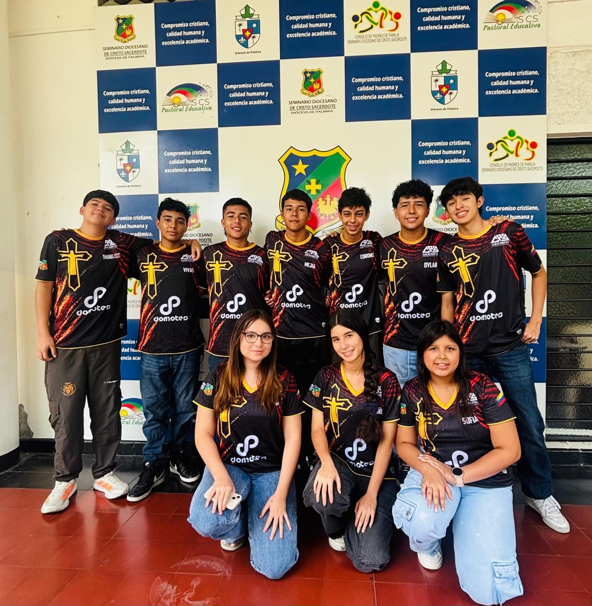
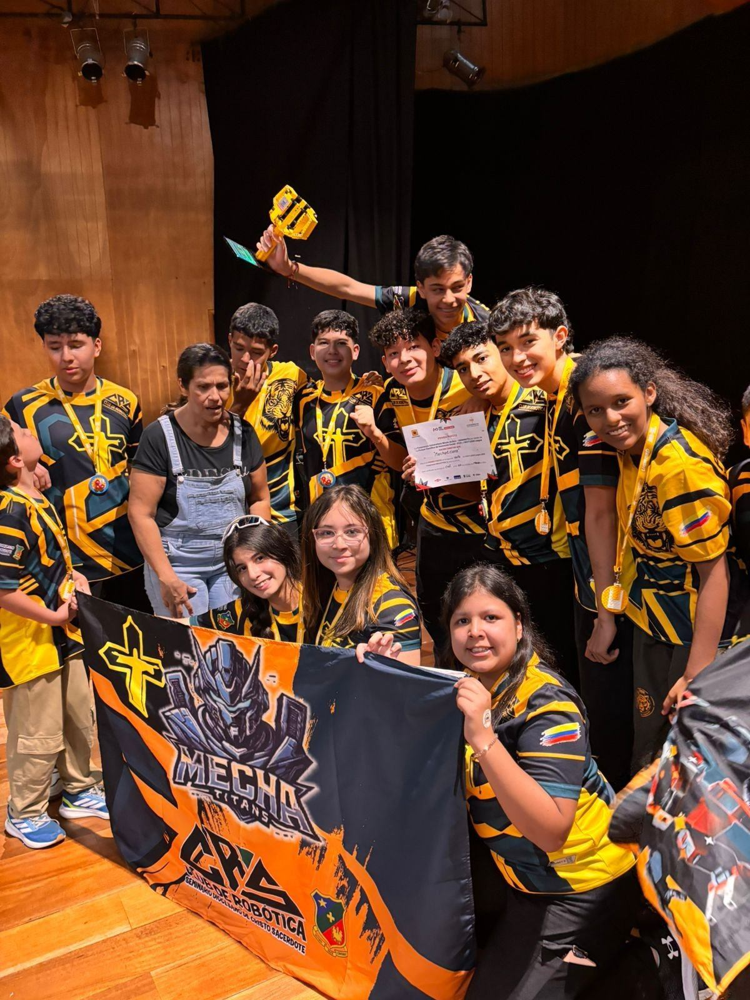

Sobre Nosotros
Preservamos y difundimos el patrimonio arqueológico del Seminario Diocesano de Cristo Sacerdote a través de tecnología 3D interactiva.

¿Quiénes somos?
El Museo Seminario nace en 2026 como iniciativa del Seminario Diocesano de Cristo Sacerdote para preservar y difundir el patrimonio cultural y arqueológico de la región. Alberga una colección cerámica prehispánica del Valle del Cauca y Cundinamarca, con piezas de las culturas Calima, Malagana y Muisca.
Nuestra misión es educar y acercar la historia a todos mediante herramientas digitales innovadoras, ofreciendo recorridos virtuales inmersivos y acceso libre a nuestra colección.
Misión
Preservar, investigar y difundir el patrimonio arqueológico y cultural de la región, haciendo accesible nuestra historia a través de tecnología digital de vanguardia.
Contacto

Somos MechaTitans, el equipo de robótica del Seminario Diocesano de Cristo Sacerdote de Palmira. Participamos en la FIRST LEGO League (FLL), una competencia internacional que desafía a jóvenes a resolver problemas del mundo real combinando ciencia, tecnología, ingeniería y matemáticas.
En 2026 nos consagramos Campeones Regionales, clasificando a la instancia nacional. El proyecto ArkeBot nació como nuestra solución de temporada: digitalizar el patrimonio arqueológico del seminario mediante modelos 3D interactivos y un museo virtual accesible para todos.
El equipo está conformado por estudiantes de secundaria apasionados por la tecnología, la cultura y el trabajo en equipo, guiados por docentes y el espíritu de innovación que define a la FLL.